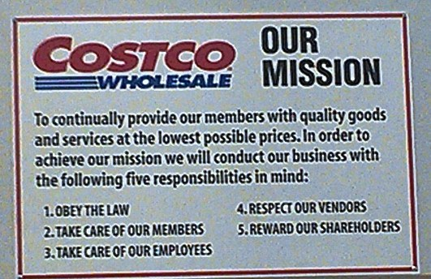
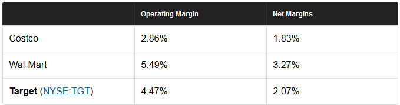
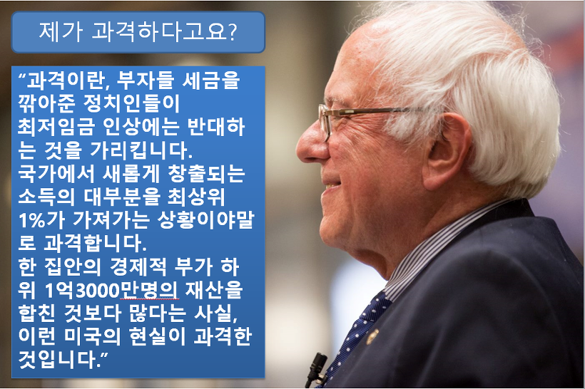
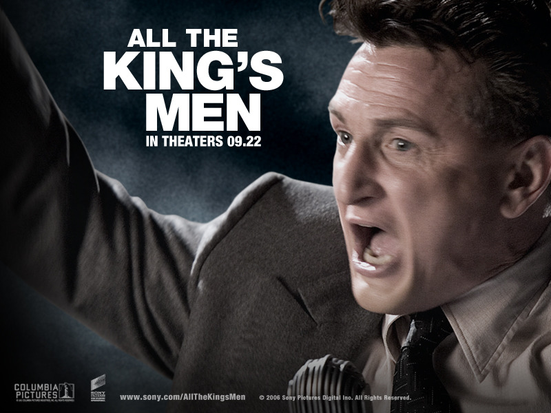
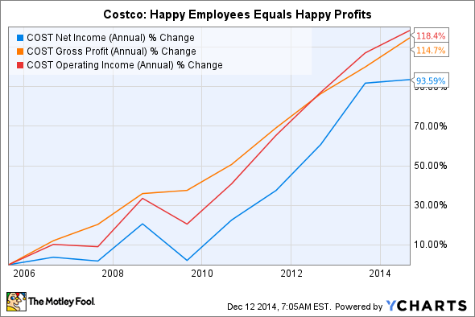

기업 이윤을 위해 국민이 희생되는 것이 옳은가 ? - 코스트코 이야기
게시: 2018-01-13T16:07:38+09:00
어제 "최저임금 7530원 되자 ‘시급 1만원’으로 올린 코스트코"라는 기사가 떴더군요. 그 기념으로 전에 썼던 글 재탕해서 올립니다.
-------------------------------
이번 글은 다소 뜬금없지만, 코스트코(Costco Wholesale)에 대한 저의 짧은 관찰입니다. 저는 한 10여 년 전부터 이 미국계 창고형 할인 매장의 회원이었습니다. 집 근처에 이게 있거든요. 여기서 파는 이런저런 색다른 외국산 먹거리도 좋습니다만, 무엇보다 싼 가격 때문에 여기를 애용합니다. 특히 여기 들릴 때마다, 우유와 베이글, 달걀과 치즈만 사가도 1년 연회비(3만5천원이던가...)는 뽑는다고 생각합니다. 시중가와 비교할 때 매우 싸다고 생각합니다.
저는 대형 할인매장의 주말 강제 휴업에 대해 뭐 나름 확신을 가지고 반대하는 입장까지는 아니더라도, 별 소용 없는 조치일 것이라고 생각하고 있습니다. 참고로 저는 이마트보다는 오히려 코스트코를 더 자주 가는 편입니다. 물론 가장 많이 가는 곳은 집 앞에 있는 수퍼마켓인 농협 하나로마트입니다.
제가 코스트코를 한 10여년 이상 이용하면서 느낀 점을 몇가지 적어놓겠습니다. 기업과 그 고용인, 그리고 사회와의 관계에서 좋은 기업이란 어떤 것인지를 보여주는 사례 중에서, 제가 직접 보고 느낀 것 중에서는 가장 좋은 사례라고 생각되어 그렇습니다. 물론 이는 코스트코라는 기업을 잘 모르는 동네 주민으로서의 관찰일 뿐이니, 제가 오해하는 점이 많을 수 있습니다. 코스트코에 대해 제가 몰랐던 점에 대해 알려주실 것이 있다면 댓글로 부탁드립니다.
1. 코스트코의 운영 우선 순위
코스트코 입구에 들어갈 때 보면, 벽 한쪽에 (그다지 눈에 아주 잘 띄지는 않지만) 크게 걸린 'mission statement', 즉 그 기업의 운영 목적과 사명 정도가 걸려 있습니다. 제 눈을 사로 잡았던 것은 거기에 포함된 5가지 책임 조항이었습니다.
1) 법을 준수한다
2) 회원에 대해 봉사한다
3) 직원에 대해 봉사한다
4) 납품 업체를 존중한다
5) 주주에게 보답한다

제가 지금 일하는 회사도 훌륭한 회사이고, 저희 회사에는 저런 명시적인 우선 순위같은 것은 없습니다만, 제가 피부로 느낀 저희 회사의 우선 순위는 이렇습니다.
1) 법 준수 2) 주주에 대한 보답 3) 고객에 대한 봉사 4) 직원에 대한 봉사 5) 납품 업체 존중
아마 대부분의 기업들이 다 실제적으로는 저희 회사와 비슷할 것입니다. 그런데 저렇게 직원과 납품 업체에 대한 책임을 주주에 대한 책임보다 더 높이 배치한 것을 보고, 직원 입장인 저로서는 꽤 감동을 먹었더랬습니다. 코스트코도 실제 운영 상황은 좀 다르겠지요. 그래도 최소한 mission statement에 저렇게 우선 순위를 매겨 놓았다는 것 자체만으로도 정말 훌륭하다고 봅니다.
2. 이상한 코스트코 직원들
코스트코를 다니면서 그 직원들에 대해 굉장히 신기하게 느꼈던 점이 몇가지 있습니다. 국내 대형 할인 매장과는 많이 다른 점이 다음과 같있습니다.
1) 직원 중에 중년 남성들 비율이 다른 곳보다 상당히 높습니다
2) 직원들 얼굴에 미소가 없습니다
3) 상품 진열대에서 고객 돕는 직원은 없고, 대신 에스켤레이터에서 쓸데없이 카트를 잡아당겨주는 직원은 꼭 있습니다
이렇게 적어놓고 보니 좀 부정적인 인상을 받으실지 모르겠습니다만, 저는 이 점들 때문에 코스트코를 굉장히 좋아하게 되었습니다.
1) 중년 남성 비율
보통 음식점이나 카페 등에는 20대 초반의 젊은이들을 주로 고용합니다. 국내 대형마트에서는 주로 중년 여성들을 많이 고용하고요. 어느 쪽에도 중년 남성들은 그다지 눈에 많이 띄지 않습니다. 이것이 '중년 남성들은 쓸데가 없다'라는 뜻도 되겠습니다만 (같은 중년 남성으로서는 참 슬픈 일이지요), 뒤짚에 놓고 보면 가족의 생계를 책임져야 하는 중년 남성 입장에서는 그런 일자리가 가족 부양에는 턱없이 부족한 임금만을 주기 때문이라는 뜻도 됩니다. 그래서 중년 남성들은 더 힘들거나 더 열악한 일자리를 택하게 되는 경우가 많습니다. (용접이나 주물 공장에 일거리는 많은데 한국인들이 게을러서 일하려 하지 않는다는 사람들은... 그런 곳의 작업 환경이 어떤지 하루라도 일해봤는지 모르겠습니다. 그런 곳에서 일하시면서 가족을 먹여살리는 많은 가장들에게 사회는 박수와 격려를 보내는 것에 그지치 않고, 어떻게 하면 그런 작업 환경을 개선하고 그 급여를 개선할 수 있는지 연구해야 합니다. 방법은 저도 모르겠습니다.)
그런데 코스트코에는 중년 남성들 비율이 다른 곳보다는 꽤 높습니다. 저는 이것을 코스트코의 급여가, 다른 곳보다는 꽤 괜찮다는 반증으로 보았습니다.
2) 웃지 않는 직원들
코스트코 직원들은 대부분, 고객을 상대할 때 웃지 않습니다. 물론 개인적으로 그냥 웃으며 '어서 오세요'라는 직원들도 있긴 합니다만, 대부분은 무표정으로 그냥 '회원 카드 주세요' 라고 말하지요. 그게 나쁘냐고요 ? 저는 지극히 당연한 것이라고 생각합니다. 하루 종일 계산대에 서서 근무하는 것은 상당히 고된 노동입니다. 그렇게 힘든 일 하면서 오는 손님마다 미소를 띄고 맞이한다 ? 그건 회사에서 강요하는 가식적 미소가 아닌 다음에야 불가능한 일이라고 봅니다. 그리고 코스트코를 찾는 손님들도 뭐 '손님은 왕'이라는 환한 미소보다는 그냥 싸고 질좋은 상품을 기대하고 온 사람들이라서, 그런 가식적 미소는 중요치 않습니다. 그런 쓸데없고 비인간적인 미소를 직원에게 강요하지 않는다는 것은, 그 회사가 직원들에게 그만큼 더 인간적인 대우를 해준다는 것이라고 저는 봅니다.
3) 정착 필요한 곳에는 없고 필요없는 곳에는 있는 직원들
코스트코는 창고형 할인 매장이다보니 천장이나 바닥재 등이 콘크리트 그대로 되어 있는 경우가 많습니다. 장식재는 커녕, 어디에 무슨 상품이 있다는 표지조차도 거의 제대로 되어 있지 않습니다. 그러다보니 새로 방문한 사람은 뭔가 살 물건을 찾으려면 한참 돌아다녀야 하는데, 이럴 때 누구 안내해 줄 직원이 있으면 좋겠지만, 정말 철저하게 없습니다. 그에 비해, 전혀 직원이 필요업는 곳인 에스켤레이터 끝부분에는 괜히 쓸데없이 고객의 카트를 끌어당겨주는 직원이 꼭 있습니다.
처음에는 회사가 참 멍청하다 라고 생각했는데, 꼭 그렇진 않은 것 같더군요. 일단 물어볼 사람이 없으니 자연스럽게 시간을 더 써서 매장 내를 더 돌아다녀야 하는데, 이건 모든 매장에서 애타게 원하는 바입니다. 그래야 쇼핑객이 더 많은 상품에 노출되어 하나라도 더 사게 되거든요. 그러면서도 안전 사고를 최소화하기 위해서, 비록 대부분의 사람들에게는 필요없더라도, 무조건 매뉴얼대로 고객의 카트를 에스켤레이터 끝에서 당겨주는 것으로 보였습니다.
고객 불만은 오히려 코스트코가 가장 적다고 어느 신문 기사에서 읽은 것으로 기억합니다. 이유는 역설적이게도 '불평할 대상인 점원이 눈에 띄지 않아서' 라는데, 제가 보기엔 더 중요한 이유가 있습니다. 바로 환불이지요. 일정 기간 내에 영수증과 함께 가져오기만 하면, 무조건, 이유도 묻지 않고 그냥 환불해줍니다. 저도 한번 브라질제 쇠고기 깡통 한박스를 샀다가 환불한 적이 있었습니다. 뭔가 육즙이 흐르는 맛있는 콘 비프 같은 것을 기대하고 샀다가, 집에 가서 뜯어보니 설렁탕 속에 들어간 뻑뻑한 삶은 쇠고기가 잔뜩 들어있는 것이더라고요. 그 다음 번에 가서 환불을 요청했는데, 저는 깡통 값 하나는 빼고 환불해줄 것으로 생각했는데, 아니더군요. 온전한 한 박스 가격 전체를 환불해 주더군요. 그러니 불만이 별로 없습니다. 다만 이런 환불 정책을 악용하는 고객들이 있을 수 있습니다. 그런 고객들을 걸러내는 정책도 있다고는 들었는데, 그건 확실한 정보는 아닙니다.
3. 경쟁력
현대 자본주의의 핵심은 경쟁입니다. 코스트코가 아무리 인간적인 정책을 쓴다고 하더라도, 직원들을 몰아세워서 억지로 웃게 만들고 고객의 갑질을 참도록 만드는 그런 경쟁업체들과의 경쟁에서 밀리면 망하는 것은 한순간입니다. 그러나 세계적인 할인 매장인 카르푸나 월마트가 한국에서 발을 못 붙이는 것에 비해, 코스트코는 한국에서도 영업 잘 하고 있고, 세계적으로는 월마트 못지 않게 잘 나가는 대형 업체입니다. 그 경쟁력의 핵심은 뭘까요 ?
결국 가격입니다. 저도 코스트코가 싸니까 거기 가는 것입니다. 그런데 어떻게 같은 물건을 국내 마트보다 훨씬 싼값에 공급하는 것일까요 ? 납품업체의 납품가를 후려치기 하는 것일까요 ? 아니면 직원들을 최저임금 이하의 급여로 막 부려먹나요 ?
코스트코의 경쟁력의 주요 요소 중 하는 집중력입니다. 코스트코에 대해 불평하는 고객들도 많은데, 이유는 상품이 다양하지 않고 카드는 삼X카드 하나만 받기 때문입니다. 그러나 이 모든 것은 가격을 낮추기 위한 코스트코의 노력입니다. 가령 여러 라면 회사로부터 라면을 각각 100상자씩 총 1천 상자 납품 받는 것보다, 한 라면 회사에서 1종류로 1천 상자 납품 받는 것이 훨씬 더 낮은 가격에 납품 받을 수 있습니다. 그리고 이 카드사 저 카드사의 카드를 다 받아주려면, 결국 카드사가 제시하는 결제 수수료를 다 지급할 수 밖에 없습니다. 그러나 코스트코는 딱 1곳의 카드만을 받으면서, 그 카드사로부터 결제 수수료율을 다른 업체보다 훨씬 낮게 협상한다고 합니다. 이 협상은 정기적으로 갱신되고요. 이런 모든 것이 낮은 판매가로 이어집니다.
또 있습니다. 제가 읽은 바로는, 코스트코의 경쟁력의 핵심은 낮은 이윤입니다. 일단, 월마트 등의 경쟁사들이 영업이익률 5~6%를 낼 때, 코스트코는 3% 이하를 낸다고 합니다. 즉, 코스트코의 진정한 경쟁력은 다른 기업들로 하여금 따라올 수 없을 정도로 낮은 이익에 만족하는 것이지요.

(Source : http://www.fool.com/investing/general/2014/12/13/6-reasons-costco-wholesale-is-the-best-retailer-to.aspx )
덕분에, 이렇게 제품 가격은 낮아도, 직원 급여는 월마트보다 높은 편이라고 합니다. 또 직원들 중 80% 이상이 회사에서 제공하는 의료보험을 받고 있어, 그 비율이 50% 정도인 월마트보다 훨씬 높다고 하더군요. 대신, CEO의 연봉는 우리나라 돈으로 약 50억원 정도로, 일반 직원 평균 연봉의 약 100배 정도에 불과(?)하다고 합니다. 이는 미국내 기업들의 평균치인 300배에 비해 많이 낮은 편이라고 합니다.

지난 미국 대선에 있어 자칭 사회주의자인 샌더스가 돌풍을 일으켰지요. (그러나 결국 트럼프가 당선된 건...ㅋ) 샌더스 돌풍의 핵심은 민초들의 분노입니다. 왜 항상 정부는 부자들과 대기업의 편만 드는가 ? 왜 국민이 뽑은, 국민을 위한, 국민의 정부라는 것이 항상 국민들에게만 희생하라고 하는가 ? 왜 대기업과 자본은 희생은 커녕 많은 이윤을 내야만 한다고 국민을 세뇌시키는가 ? 왜 항상 희생은 국민의 몫이고, 이윤은 대기업과 자본의 몫인가 ? 샌더스의 열풍이 뭔가 현실적인 정치 권력으로 이어지지는 않더라도, 최소한 정치인들에게 '국민이 분노하고 있고, 뭔가 변화가 없다면 결국 폭발한다'라는 경고를 보내는 의미는 있다고 생각합니다.

전에 인용했던 숀 펜과 주드 로 주연의 "All the king's men"이라는 영화의 한 장면을 여기서 인용해야겠습니다. 1950년대 미국에서 어떤 진보 정치가가 갖은 노력 끝에 루이지애나 주지사에 당선됩니다. 숀 펜이 배역을 맡은 이 정치가는 공약을 지키기 위해 기업과 부자들로부터 세금을 걷어 온갖 포퓰리스트적인 정책을 취하는데, 소위 재계 상류층 인사들이 '저런 비용은 결국 누가 내는 것인가 ? 저건 결국 루이지애나를 파멸로 이끌 행동들이야'라고 한탄합니다. 그러자 그 말을 듣던 주드 로가 이런 말을 합니다.
"애초에 여러분들이 정말 루이지애나의 서민들을 위해 뭔가 일을 했다면 저런 인물이 주지사로 당선되는 일은 없었을 겁니다."
저도 같은 말을 하고 싶습니다. "기업들보고 이윤을 포기하란 말인가 ? 그건 자본주의 정신에 정면으로 위배되는 빨갱이 같은 이야기다 !" 라고 주장하는 분들께는 코스트코라는 기업의 정신에 대해서도 알려드리고 싶어서 이 글을 썼습니다.

(Source : http://www.fool.com/investing/general/2014/12/13/6-reasons-costco-wholesale-is-the-best-retailer-to.aspx )